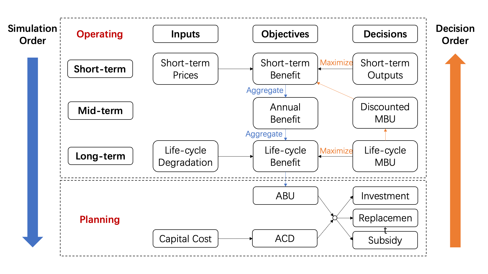

Research: An Intertemporal Decision Framework for Electrochemical Energy Storage Management
In the short term, typically day-ahead horizon, the EES operator determines the optimal daily outputs to maximize the daily benefits, based on the forecasted day-ahead hourly market prices and the discounted MBU determined in the mid-term.
For the mid-term, typically a time frame between a month and a year, the EES operator calculates the discounted MBU as the product of a discounting factor and the life-cycle MBU.
For the long term, the EES operator determines the optimal life-cycle MBU to maximize the life-cycle benefit, subject to EES degradation constraints over the EES life. The life-cycle MBU feeds into the mid-term calculation of the discounted MBU.
For the planning stage, we calculate ABU and ACD given the life-cycle benefit and the capital cost. Then we can inform investment decisions and subsidy policies by comparing the ABU with the ACD.
